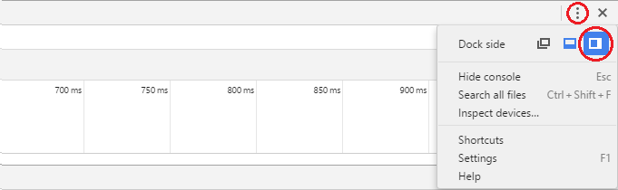
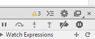
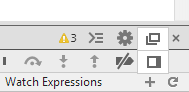

How to reposition Chrome Developer Tools
The tools are opened on the bottom of the chrome window per default. This is a rather bad choice for a wide screen display since there is plenty of empty space to the right but not much vertical space to spare. Unfortunately, I have found no way to reposition the tools. I would like to have them on the side, similar to firebug.
The only option similar to what I want is to detach the dev tools and place chrome and the tools window side-by-side. This is not very convenient for quickly alt-tabbing from the IDE to the browser and back though, so an "integrated" solution would be nice.
Answer
Chrome 46 or newer
Click the vertical ellipsis button ( ⋮ ) then choose the desired docking option.

Chrome 45 or older
Long-hold the dock icon in the top right. It pops up an option to change the docking

To change the split between the HTML and CSS panels, go in DevTools to Settings (F1) > General > Appearance > Panel Layout.
Suggest
Place your pointer on the dock button and long click it (some seconds) or right & left mouse click depending on the browser version.
